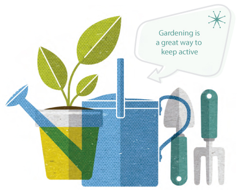

Keep moving for a balanced life
We’ve seen how ageing impairs balance, muscles and joints. And this is made worse if we spend long periods sitting down
The more active you can be – and the more you break up your day so you’re not sitting for extended periods – the more you can offset the effects of ageing.
